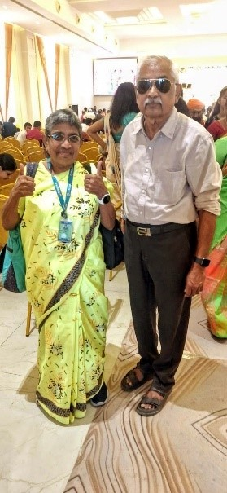

Dr. R. Kalaimathi recently participated in social and professional gatherings, providing opportunities to reconnect with friends, classmates and members of the veterinary community>.
On 29 March 2026, she attended a classmate’s family wedding reception, where she met and interacted with her classmates Dr. P. Dhanapalan and Dr. N. Rajendran. The occasion provided an opportunity for the former classmates to reconnect and share memories.

Dr. Kalaimathi also participated in a Veterinarians’ Meet held at Hotel Palmgrove, Chennai, on 5 April 2026, continuing her engagement with professional colleagues and friends.
Her participation in these gatherings reflects the spirit of “Active Again”—staying socially connected, maintaining friendships and continuing engagement with the veterinary community.
TTPA is pleased to see Dr. R. Kalaimathi actively participating in social and professional gatherings and wishes her many more enjoyable occasions with friends and colleagues.